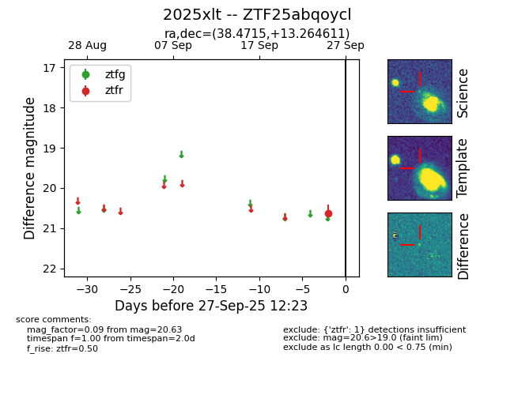

FINK: ZTF25abqoycl
Lasair: ZTF25abqoycl
ALeRCE: ZTF25abqoycl
TNS: 2025xlt
YSE: 2025xlt
ZTF25abqoycl (ztf,fink)
2025xlt (tns,yse)
equatorial (ra, dec) = (38.4715,+13.26461)
galactic (l, b) = (157.7743,-42.57099)

last ztfr=20.63
1 ztfr detections